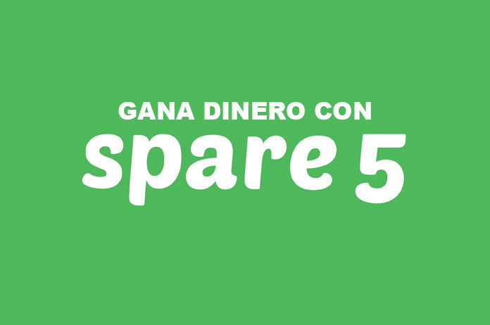
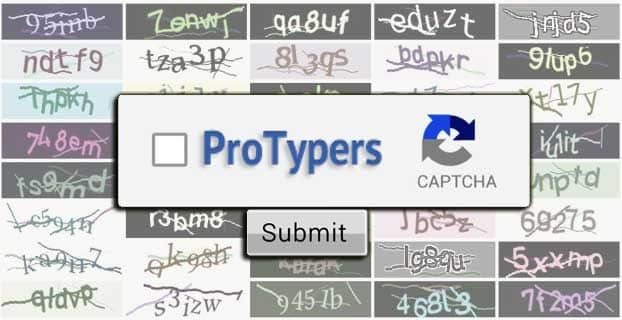
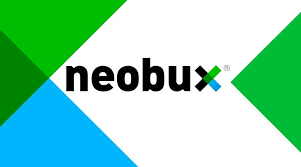

TOP MEJORES PAGINAS PARA GANAR DINERO POR INTERNET
Hola bienvenido a esta pagina aqui te estare mostrando las mejores paginas
para ganar dinero por internet sin invertir nada empezemos...
N°1
Publipaid
En esta pagina lo que tienes que hacer es ver anuncios y tan solo con ver esos anuncios y clicar sobre ellos te estaran pagando una cantidad de 20 centavos por cada anucio que veas y por los referidos tambiem te pagaran. aqui en esta pagina para que ganes mucho mas tienes que alquilar referidos con esta opcion estaras ganando mucho mas dinero
para registrarte en esta pagina aqui esta el link: https://publipaid.com/r80YYB
N°2
Spare5

Spare5, una excelente página para ganar dinero haciendo tareas sencillas . Como puntos a destarcar se trata de una página para ganar dinero fácil a base de hacer mini tareas, tiene un mínimo de pago muy adsequible de solo 1$, pagan semanalmente por PayPal y probablemente se convertirá en una de las mejores plataformas para ganar dinero del año 2017.
Pertenece a una empresa ubicada en USA (Seattle) que presta sus servicios desde mediados de 2014 y desde entonces paga a todos sus miembros. Otro de los puntos que me ha gustado es que sirve para todo el mundo, con lo cual sea del país que seas no debes de preocuparte, eres bienvenido en Spare5.
Parece que todo son cosas buenas y la verdad que sí que lo son. Es más, seguro que ahora estás pensando en regístrarte ¿verdad? Te digo de antemano que haciéndolo desde aquí, es decir desde el blog GanaTuSueldo ganarás un 10% extra, por lo tanto por cada 10$ que ganes en la plaforma sumarás un bono de 1$.
para registrarte en esta pagina aqui esta el link: https://app.spare5.com/
N°3
Protypers

ProTypers, propiedad de Zombie Software Developed, es una plataforma en la cual podrás ganar dinero mediante el negocio de la transcripción de captchas.
En línea desde el año 2012, ProTypers se perfila como una de las plataformas más fiables y seguras para ganar dinero mediante la resolución de captchas en directo. Además este tipo de negocios son muy estables ya que detrás hay cientos de empresas, plataformas y desarrolladores que buscan automatizar la tarea de la resolución de captchas. En este punto es donde entran en juego plataformas como ProTypers que conectan usuarios reales que quieren generar un dinero extra resolviendo captchas con empresas o plataformas que buscan captchas resueltos correctamente.
para registrarte en esta pagina aqui esta el link: http://www.protypers.com/register
N°4
Neobux

Hoy tengo el privilegio de hablar de Neobux, una Ptc (página de pago por clic) que lleva más de 9 años online, paga instantáneamente y crece día a día como la que más. A estas alturas es complicado encontrar negocios con tantos años en línea, pues esta magnifica Ptc puede presumir de ello con creces, es una de la más sólidas, estables y confiables que tenemos en la actualidad.
En neobux se pueden registrar personas de cualquier parte del mundo. A través de su sencilla plataforma disponible en varios idiomas, podrás trabajar tranquilamente desde casa y de esta forma conseguir interesantes beneficios.
para registrarte en esta pagina aqui esta el link: https://www.neobux.com/